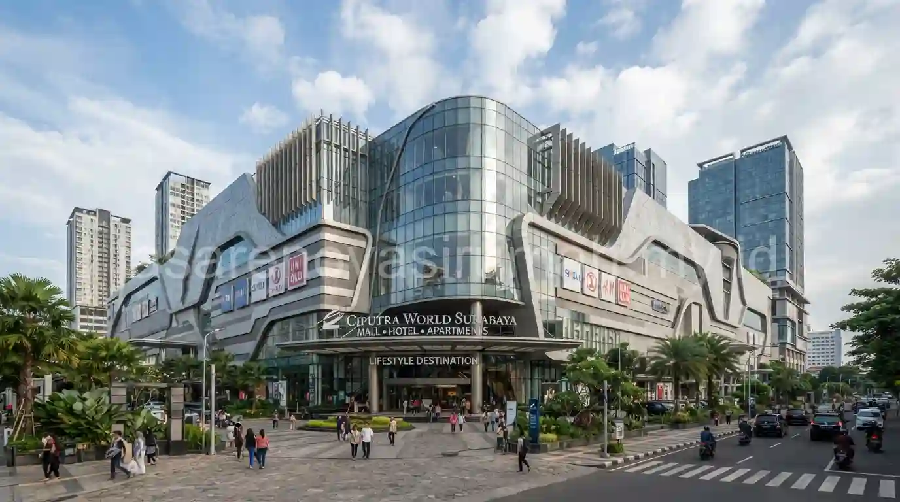
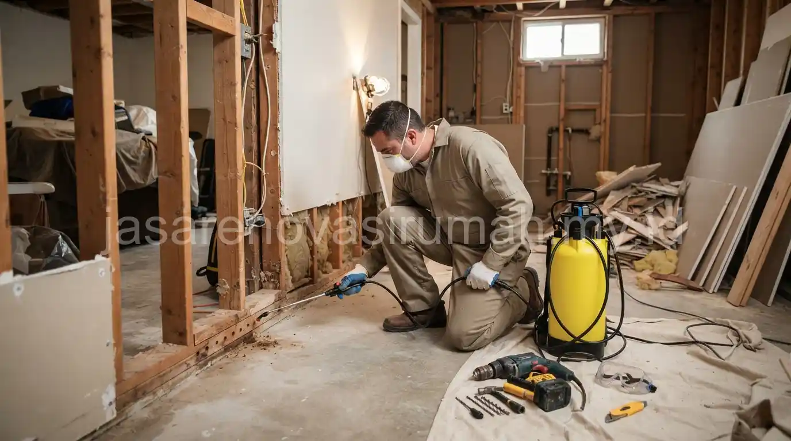

Jasa kontraktor renovasi Surabaya yang berpengalaman memahami tantangan khas iklim tropis kota ini, mulai dari suhu panas yang tinggi hingga risiko rayap pada struktur kayu, sehingga pemilihan material dan metode pengerjaan disesuaikan agar hasil renovasi lebih tahan lama. Portofolio penanganan fasad modern di kawasan Surabaya Barat menjadi salah satu bukti bagaimana kontraktor lokal mampu menggabungkan estetika dengan solusi teknis yang relevan dengan kondisi lingkungan setempat.
Apa Tantangan Utama Renovasi Rumah Tropis di Surabaya?
Tantangan utama renovasi rumah di Surabaya adalah suhu udara yang cenderung panas sepanjang tahun serta kelembapan yang mempercepat kerusakan material kayu akibat rayap.
Beberapa tantangan spesifik yang perlu diperhatikan saat merenovasi rumah di kawasan ini:
- Suhu panas yang membuat pemilihan material atap dan ventilasi menjadi krusial agar ruangan tidak terasa gerah.
- Kelembapan tanah di beberapa kawasan yang meningkatkan risiko serangan rayap pada kusen dan rangka kayu.
- Paparan sinar matahari langsung yang mempercepat pudarnya warna cat eksterior bila tidak menggunakan produk berkualitas.
- Kebutuhan sirkulasi udara silang yang lebih diperhitungkan dibanding renovasi di kawasan beriklim lebih sejuk.
Kontraktor yang berpengalaman menangani kondisi ini biasanya sudah memiliki solusi baku, seperti penggunaan material kusen aluminium sebagai alternatif kayu solid, atau penambahan bukaan ventilasi tambahan pada desain ulang atap.
Bagaimana Menangani Masalah Rayap Saat Renovasi Rumah?
Penanganan rayap yang tepat dimulai dari inspeksi menyeluruh pada bagian kayu yang berisiko, dilanjutkan dengan perlakuan anti-rayap sebelum material baru dipasang, agar masalah tidak berulang setelah renovasi selesai.
Beberapa langkah penanganan rayap yang umum diterapkan:
- Inspeksi area kayu seperti kusen, plafon, dan rangka atap untuk mendeteksi tanda-tanda serangan rayap sejak dini.
- Ganti bagian kayu yang sudah rapuh dengan material baru yang sudah diberi perlakuan anti-rayap.
- Aplikasikan cairan anti-rayap pada area tanah di sekitar pondasi sebagai lapisan pencegahan tambahan.
- Pertimbangkan penggunaan material alternatif seperti aluminium atau UPVC pada kusen untuk area yang rawan lembap.
Penanganan yang menyeluruh seperti ini penting dilakukan sejak tahap awal renovasi, karena menutup masalah rayap tanpa penanganan akar penyebabnya berisiko membuat kerusakan muncul kembali dalam waktu singkat setelah renovasi selesai.

Seperti Apa Portofolio Renovasi Fasad Modern di Surabaya Barat?
Portofolio renovasi fasad modern di kawasan Surabaya Barat umumnya menonjolkan garis bersih, kombinasi material tahan panas, dan warna netral yang tetap terlihat segar meski terpapar sinar matahari langsung sepanjang hari.
Proyek-proyek renovasi fasad di kawasan ini biasanya mengganti tampilan lama yang sudah kusam dengan pendekatan modern, seperti penambahan kanopi untuk mengurangi paparan panas langsung ke dinding, atau penggunaan cat eksterior dengan lapisan pelindung UV untuk menjaga warna tetap tahan lama. Pemilihan material fasad yang tepat untuk iklim tropis ini turut memengaruhi kenyamanan suhu ruangan di dalam rumah, bukan hanya soal tampilan visual semata.
Pada akhirnya, memilih jasa kontraktor renovasi Surabaya yang tepat berarti memastikan pengalaman menangani tantangan spesifik iklim tropis, mulai dari risiko rayap hingga kebutuhan material tahan panas, bukan sekadar kontraktor renovasi pada umumnya. Tim kami memiliki sertifikasi SKA/IAI dan siap membantu mulai dari konsultasi desain, penanganan rayap, hingga pelaksanaan renovasi fasad bergaransi resmi untuk rumah Anda di Surabaya. Temukan juga berbagai inspirasi dan tips menarik lainnya di halaman blog kami.
FAQ Seputar Renovasi Rumah di Surabaya

Ainur Reza
Penulis Profesional & Praktisi Konstruksi
Ainur Reza adalah seorang penulis profesional yang memiliki ketertarikan mendalam pada dunia arsitektur dan konstruksi. Dengan pengalaman bertahun-tahun mengamati tren renovasi rumah, ia aktif membagikan panduan praktis, tips RAB, dan wawasan seputar material bangunan untuk membantu pemilik rumah mewujudkan hunian impian mereka dengan anggaran yang efisien.